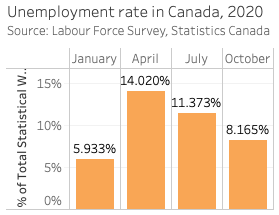
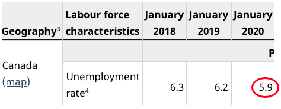
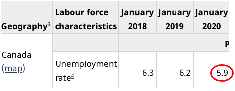
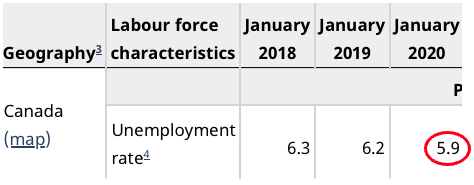

The Vancouver Campus is located on the traditional, ancestral, and unceded territory of the xʷməθkʷəy̓əm (Musqueam) people.Map: https://native-land.ca/
Learning objectives
Recognize the characteristics of an effective visualization
Format data for visualization
Create a simple visualization using Tableau
Tableau Public
Limitations of the free version
Visualizations cannot be saved locally
Dataset limit of 1M records
Cannot connect databases
Participating online
Active participation enlivens the session with other voices and perspectives. We encourage you to engage with instructors and with each other. Microphones are muted by default to improve audio quality and recording is disabled to preserve participant privacy. The Zoom toolbar provides several ways to be part of the conversation.
In this workshop we begin with a dataset in CSV format containing 360,554 rows of data from Statistics Canada about labour and employment in Canada for selected months in 2020. By the end you will be able to create simple, clear graphs from the data like the ones below..
Source data
Sample map output
“Data visualization is the graphical display of abstract information for two purposes: sense-making (also called data analysis) and communication.”
-Stephen Few, What is Data Visualization
This workshop emphasizes the role data visualization plays in the two activities identified above. Visualization makes it easier to explore and understand what’s going on in our data, fulfilling the sense-making purpose. It can also improve the communication of our findings by drawing attention to the patterns, relationships, and stories we choose to highlight.
Data visualizations are often attractive, but it isn’t primarily their visual appeal that makes them work. A chart or graph that communicates effectively taps into the processes of perception and cognition. To create and recognize good visualizations it will help to understand a few concepts.
Preattentive processing
The eye and brain’s ability to process certain visual properties almost instantly, without conscious effort.
Encoding quantities: length and size
Remove unnecessary content to focus the viewer

When using visualizations to communicate it is good practice to remove elements that are not required to convey your message. Additional labels, lines, and decimal points compete for the viewers attention and can distract from what matters most in a visual display. It is important to provide enough detail for the viewer to orient themselves and understand the graph, but removing unecessary components provides more breathing room and helps the viewer focus on the content.
In your own work review each visual component and ask whether it helps keep the viewer focused. The “less is more” rule often leads to clearer visualizations.
Use colors intentionally to encode information
Colorblindness . Avoid encoding important information in colors that may be difficult for some viewers to perceive. See 5 tips on designing colorblind-friendly visualizations .
Visual continuity . A dashboard or report may contain several visualizations based on the same data. If the same category appears in several graphs use the same color scheme to depict it throughout. This will make it easier for viewers see the relationship among your graphs.
Meaningful encoding . The colors on the left below do not encode any new information and add distracting visual complexity to the graph. By not “spending” colors unnecessarily designers can use them to greater effect (e.g. to call attention to a particular value).
Some guiding principles
Choose clarity over variety Reduce burden on the reader Present data with integrity
Visual variety can be appealing, but ensure that it also serves the communicative and sense-making purposes of your visualizations.How charts lie : getting smarter about visual information.
Preparing your data
This workshop emphasizes the visualization but in many cases your data will need to be manipulated, reformatted, and re-packaged before you feed it to a visualization tool. Tableau (and other visualization tools) have some features to help clean messy data, but here are some general things to consider when preparing your data.
Each measure in one column
If you’re working with tabular data (e.g. Excel, csv), format it so that each measure appears in one column only. A table like this will be harder to work with and will have fewer visualization options than this table with the same information:
Know your dataset
How is it formatted?
How many records are there?
What are the variable labels?
Is there a user guide or data dictionary?
It’s important to know a few things about your data before importing it. How many records are there? What are the variable labels? Knowing this will help you confirm that Tableau imported the data correctly.
The sample dataset for this workshop contains four months of data from the Statistics Canada Labour Force Survey (Jan, Apr, Jul, and Oct 2020). This data and supporting documentation is freely available from UBC Library’s Abacus data repository under the terms of the Statistics Canada Open License . Statistics Canada’s Guide to the Labour Force Survey provides information about the survey purpose, methodology, and terms.
Checking your work
If you know your data it’s easier to spot when something’s not quite right, suggesting a setting or calculation is incorrect. The sample dataset is the same one used to generate Statistics Canada table 14-10-0017-02 , Labour force characteristics by province, monthly, unadjusted for seasonality . As you learn Tableau you may use this table to check your work.

Statistics Canada table 14-10-0017-02 , Labour force characteristics by province, monthly, unadjusted for seasonality .


 
